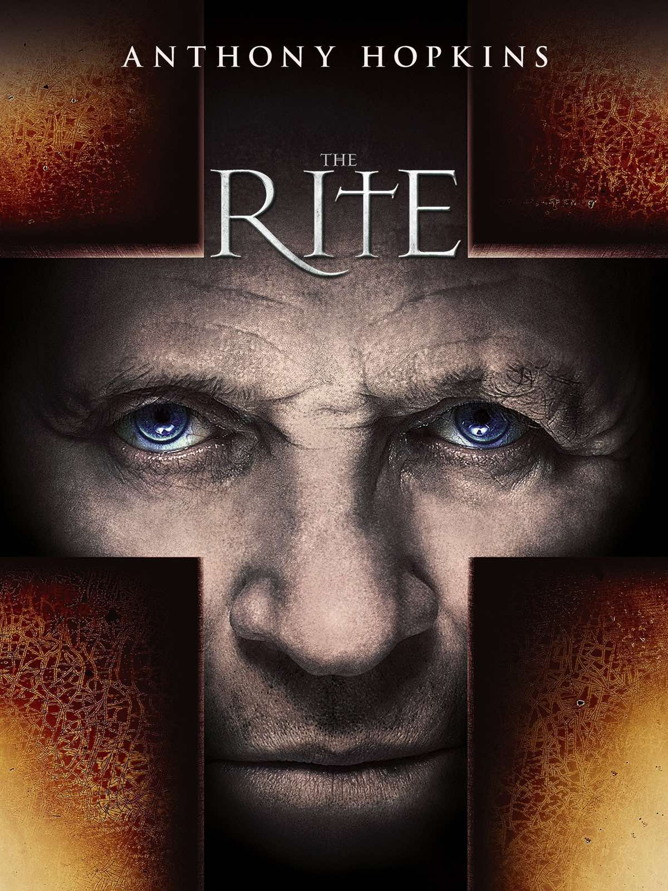
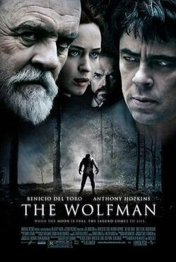
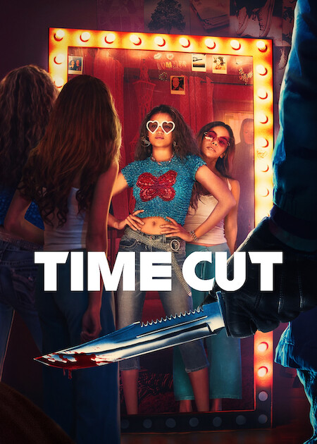
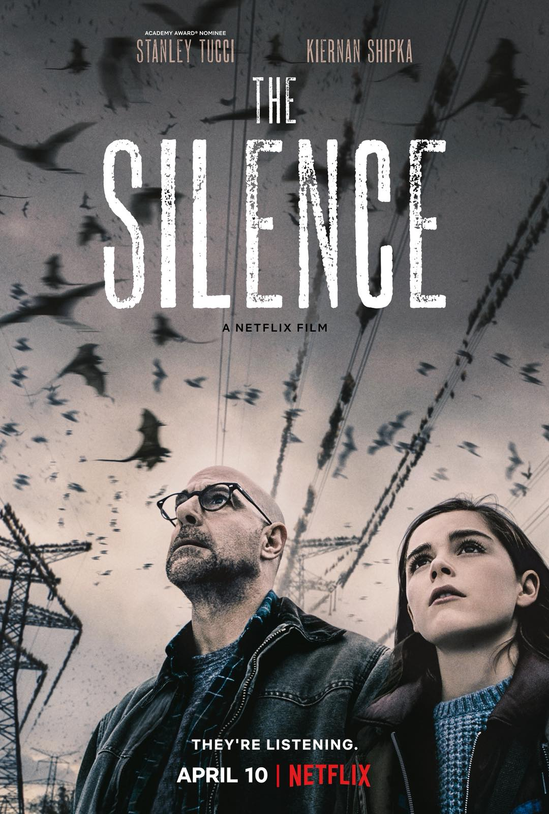

Ποιο μέρος θα διάλεγες να επισκεφτείς το βράδυ?
Ένα παλιό δάσος που δεν έχω ξαναεπισκεφτεί.
Ένα εγκαταλελειμμένο μέρος που κανείς δεν έχει εξερευνήσει.
Μια άδεια πόλη.
Ένα παλιό κτίριο με ιστορία.
The Rite

1/14
Κάποιος σου δίνει ένα όπλο και σου λέει «μην το χρησιμοποιήσεις ποτέ». Τι κάνεις?
Θέλω να μάθω γιατί δεν μπορώ να το χρησιμοποιήσω.
Το κρατάω, αλλά δεν το αγγίζω μέχρι να καταλάβω περισσότερα για αυτό.
Το επιστρέφω. Δεν θέλω να μπλέξω πουθενά.
Θα το χρησιμοποιούσα μόνο αν δεν υπήρχε άλλη επιλογή.
The Wolfman

2/14
Ποιο αντικείμενο θα κρατούσες ανάμεσα στα παρακάτω?
Ένα ρολόι.
Ένα παλιό κειμήλιο.
Ένα ζευγάρι ακουστικά.
Ένα φυλαχτό.
The Wolfman
3/14
Θα ήθελες να ξέρεις τι θα συμβεί αύριο?
Ναι, ειδικά αν μπορούσα να προλάβω κάτι κακό.
Θα το ήθελα μόνο αν αφορούσε κάποιον που αγαπώ.
Όχι. Θα προτιμούσα να το ζήσω όπως έρθει.
Ναι, αλλά μόνο αν μπορούσα να αλλάξω αυτό που θα μάθαινα.
Time Cut

4/14
Ανοίγεις ένα συρτάρι και βρίσκεις κάτι που δεν θυμάσαι να έχεις βάλει ποτέ εκεί. Τι σκέφτεσαι πρώτο?
«Ποιος το άφησε εδώ;»
«Να προσπαθήσω να σκεφτώ τι μπορεί να μου θυμίζει»
«Μήπως υπάρχει κάτι που δεν καταλαβαίνω;»
«Καλύτερα να μην ασχοληθώ καν.»
Time Cut
5/14
Ποια από αυτές τις νύχτες θα σου φαινόταν πιο ενδιαφέρουσα?
Μια νύχτα που ξεκινά φυσιολογικά και καταλήγει εντελώς διαφορετικά.
Μια νύχτα όπου πρέπει να ακολουθήσεις πολύ συγκεκριμένους κανόνες.
Μια νύχτα όπου ανακαλύπτεις κάτι για τον εαυτό σου που δεν γνώριζες.
Μια νύχτα όπου ένα παλιό μυστήριο ξαναέρχεται στην επιφάνεια.
Time Cut
6/14
Βρίσκεις μια παλιά φωτογραφία με έναν άνθρωπο που δεν αναγνωρίζεις. Τι κάνεις?
Προσπαθώ να ανακαλύψω ποιος είναι.
Ψάχνω τι σχέση μπορεί να έχει με το μέρος όπου τη βρήκα.
Την κρατάω. Κάτι μου λέει ότι θα τη χρειαστώ.
Προτιμώ να την αφήσω εκεί. Δεν θέλω να μπλέξω σε κάτι που δεν καταλαβαίνω.
The Wolfman
7/14
Βλέπεις τέσσερις πόρτες. Η καθεμία έχει διαφορετικό χρώμα και διαφορετικό φωτισμό πάνω της. Ποια θα διάλεγες?
Μαύρη πόρτα με κόκκινο φως.
Καφέ πόρτα με πράσινο φως.
Γκρι πόρτα με λευκό φως.
Λευκή πόρτα με μωβ φως.
Time Cut
8/14
Είσαι στη μέση του πουθενά και δυσκολεύεσαι να κουβαλήσεις πράγματα. Τι από τα παρακάτω θα σε έκανε να θες να κρατήσεις ένα αντικείμενο που βρήκες?
Ένα αντικείμενο που θα μπορούσε να στείλει ένα μήνυμα πολύ μακριά για να ζητήσω βοήθεια σε μια δύσκολη συνθήκη.
Ένα αντικείμενο αξίας που θα πίστευα ότι κρύβει μια ιστορία από πίσω.
Ένα αντικείμενο που θα μπορούσε να γυρίσει πίσω τον χρόνο σε μια συγκεκριμένη μέρα.
Ένα αντικείμενο που θα είχα δικαίωμα να χρησιμοποιήσω μόνο μία φορά, αλλά θα με έσωζε από μια κατάσταση.
The Wolfman
9/14
Κάποιος σου λέει ότι έχει δει κάτι που εσύ θεωρείς αδύνατο. Πώς αντιδράς?
Θέλω να το δω με τα μάτια μου.
Τον πιστεύω, αλλά είμαι επιφυλακτικός.
Δεν τον πιστεύω. Αν το θεωρώ αδύνατο, τότε είναι αδύνατο για εμένα.
Προτιμώ να μην το ψάξω καθόλου. Ο χρόνος θα δείξει.
Time Cut
10/14
Αν μπορούσες να κρατήσεις μόνο ένα πράγμα από το παρελθόν σου, τι θα ήταν?
Κάτι που μου θυμίζει την οικογένειά μου και το πού μεγάλωσα.
Κάτι που μου θυμίζει ποιος είμαι.
Κάτι που θα μπορούσε να βγάλει στην επιφάνεια τον καλύτερό μου εαυτό.
Κάτι που θα μπορούσε κάποτε να μου αποκαλύψει μια αλήθεια.
Time Cut
11/14
Βρίσκεις ένα παλιό μπαούλο. Τι θα ήθελες να υπάρχει μέσα?
Κάτι που θα εξηγούσε ένα μυστήριο από το παρελθόν.
Κάτι που θα μπορούσε να αλλάξει μια σημαντική απόφαση του παρελθόντος.
Κάτι που θα αποκάλυπτε μια άγνωστη πλευρά ενός ανθρώπου.
Κάτι που καλύτερα να μην είχε βρεθεί ποτέ.
The Rite
12/14
Αν γνώριζες κάποιον που περνάει μια πολύ δύσκολη περίοδο, τι θα ήθελες περισσότερο να κάνεις για εκείνον?
Να τον βοηθήσω να βγάλει τον καλύτερο εαυτό του.
Να τον βοηθήσω να ξεπεράσει κάτι που τον κρατάει πίσω.
Να μείνω δίπλα του μέχρι να νιώσει ασφαλής.
Να τον βοηθήσω να αντιμετωπίσει αυτό που κρύβει μέσα του.
The Silence

13/14
Αν έπρεπε να στερηθείς για μία μέρα μία από τις παρακάτω αισθήσεις ή ικανότητες, ποια θα επέλεγες?
Να μη βλέπεις.
Να μην ακούς.
Να μην μιλάς.
Να μην θυμάσαι.
The Silence
14/14